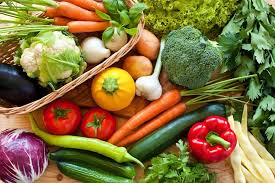
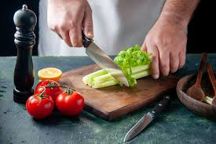

Sports is a large global business.
Billions of dollars are spent at sporting events, on sports teams, on sports events, as well as on sports-related equipment and apparel. This guide is devoted to those sports that are the largest in terms of monies at the professional level, and as a result, not every sport is included. The primary focus is on the professional sports industry in the United States although there are a few instances in which the international aspects of the industry are mentioned. Because of the focus on professional sports, the Olympics and amateur events are not included.
What is a healthy diet?
Eating a healthy diet is not about strict limitations, staying unrealistically thin, or depriving yourself of the foods you love. Rather, its about feeling great, having more energy, improving your health, and boosting your mood.
 While some extreme diets may suggest otherwise, we all need a balance of protein, fat, carbohydrates, fiber, vitamins, and minerals in our diets to sustain a healthy body. You don't need to eliminate certain categories of food from your diet, but rather select the healthiest options from each category. Using span for following: Fruit / vegetables / legumes (e.g. lentils and beans), nuts and whole grains (e.g. unprocessed maize/ millet/ oats/ wheat and brown rice)